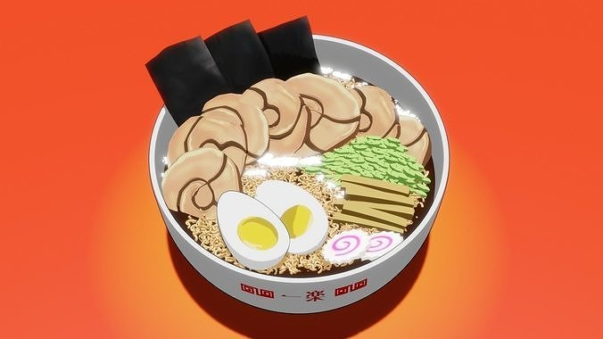

Naruto Style Ramen

Recipe Description
What could possibly be better than Ichikaru ramen? Naruto Style Ramen!
This hot steaming bowl of deliciousness stems from one of the greatest works of fiction, Naruto Shippuden!
Packed with mouth watering ingredients, this ramen will leave your taste buds wanting more.
Recipe Ingredients
- 2 Packages of Top Ramen
- About 5 cups of pork or beef broth
- Pork tenderloin
- 2 Eggs
- 1 Baby bok choy
- 1 Green onion
- Soy sauce
Directions
- Marinate the tenderloin for at least 3 hours with soy sauce
- Preheat your oven to 450, then cook the tenderloin for 12-15 minutes
- Put your eggs in a pot with enough water to cover them. Bring to a boil and cover with a lid. It should take about 10 minutes to hard boil the eggs
- While this is happening, pour or mix the stock/broth in a pot and bring it to a simmer
- Once simmering, add the Top Ramen noodles
- Now cut up all the toppings! Peel the eggs and slice them in half, cut the pork, bok choy, and green onion into thin slices
- Serve up the noodles and broth in a nice deep bowl, then place all the ingredients in groups on top
- Enjoy!
Back to the Main Page